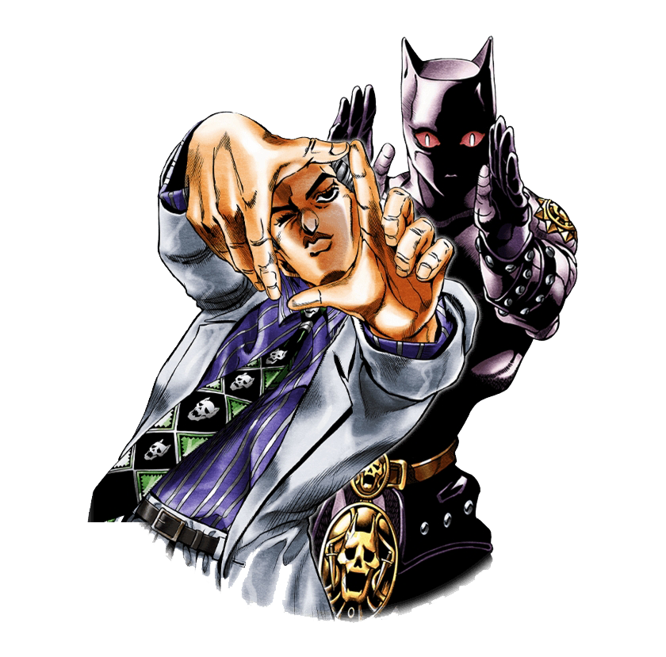
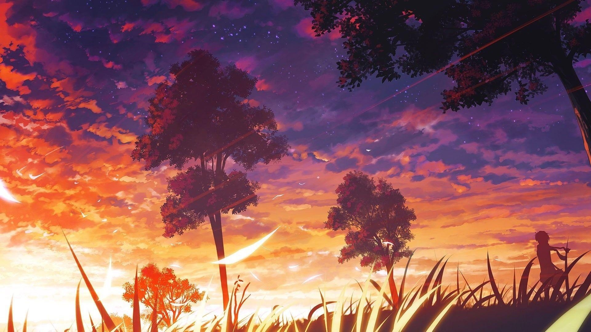

My name is Yoshikage Kira. I'm 33 years old. My house is in the northeast section of Morioh, where all the villas are, and I am not married. I work as an employee for the Kame Yu department stores, and I get home every day by 8 PM at the latest. I don't smoke, but I occasionally drink. I'm in bed by 11 PM, and make sure I get eight hours of sleep, no matter what. After having a glass of warm milk and doing about twenty minutes of stretches before going to bed, I usually have no problems sleeping until morning. Just like a baby, I wake up without any fatigue or stress in the morning. I was told there were no issues at my last check-up. I'm trying to explain that I'm a person who wishes to live a very quiet life. I take care not to trouble myself with any enemies, like winning and losing, that would cause me to lose sleep at night. That is how I deal with society, and I know that is what brings me happiness. Although, if I were to fight I wouldn't lose to anyone.


Pardon my intrusion on your excitingly important conversation, but simply must comment on what one of you had said earlier, which I have stumbled upon and believe to be a reference, the action of mentioning or alluding to something, to the widely popular animation made in Japan that centers around a man, from the largely wealthy Joestar family, around the industrial Revolution, to be exact the year 1880, where the man named Jonathan Joestar fights the famous villain Dio, in order to restore peace to his family. This famous story continues through his bloodline onto loseph Joestar, who also posses the powers known to only a few around the world. The story slowly progresses with each important member of the Joestar family living out their lives around each other. As the title to the Japanese animation suggests, the show is quite strange and unusual, forcing everything out of each character. The starring cast, or Joestar family rarely dies on screen, however the supporting cast favorites die often, leaving the audience in complete shock and tears, Called "JoJo's Bizarre Adventure" by Hirohiko Araki if i am correct?